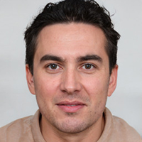

Nuestro equipo de diseñadores se enfoca en crear piezas visuales impactantes que
conecten con tu
audiencia. Desde branding hasta campañas visuales, cuidamos cada detalle para garantizar la
coherencia y originalidad en cada proyecto.
Soluciones web a medida
Desarrollo Web Innovador
Nos especializamos en crear sitios web que no solo lucen bien, sino que ofrecen una
experiencia de
usuario fluida. Nuestros desarrollos son responsivos, rápidos y diseñados pensando en la
accesibilidad y optimización SEO.
Contenido dinámico y visual
Producción Multimedia
Transformamos tus ideas en contenido visual efectivo, ya sea para redes sociales,
presentaciones
corporativas o comerciales. Nuestro equipo de producción utiliza las últimas herramientas para
garantizar resultados de alta calidad.
Potencia tu presencia
Estrategia Digital
Desarrollamos estrategias personalizadas para optimizar tu presencia en plataformas
digitales.
Analizamos el comportamiento del consumidor, gestionamos redes sociales y generamos campañas que
convierten visitantes en clientes.
¿Quienes Somos?
En ARTWUS, transformamos ideas en soluciones visuales únicas. Nos especializamos en diseño multimedia y
tecnología.
Nuestro equipo está compuesto por expertos en diferentes áreas del diseño, desde gráficos hasta
desarrollo web. Juntos, creamos experiencias visuales impactantes.
Nos enfocamos en la creatividad y la innovación. Creemos que cada proyecto es una oportunidad para
destacar con soluciones personalizadas.
Utilizamos herramientas avanzadas y seguimos las tendencias más recientes. Esto nos permite estar
siempre un paso adelante en un mundo digital cambiante.
Trabajamos de la mano con nuestros clientes, asegurándonos de que cada detalle refleje sus necesidades y
visión. La transparencia es clave en nuestro proceso.
En ARTWUS, nos enorgullece haber ayudado a diversas marcas a crecer y destacarse. Cada proyecto es un
desafío que nos motiva a ir más allá.
Nuestros Clientes
Diseñamos para impresionar y ellos lo confirman.

Santiago Pérez
Gerente de Marketing en Lacoste
Artwus impulsó nuestra campaña digital a nuevos niveles de innovación. Un equipo excepcional en
diseño de alto nivel.
Laura Gómez
Responsable de Comunicación en Tesla
Su enfoque creativo y tecnológico encajó a la perfección con nuestra visión. Altamente recomendados
para marcas innovadoras.
Javier Martínez
Director de Marketing en Starbucks
Artwus capturó la esencia de nuestra marca y la transmitió de manera impecable. Son expertos en conectar con
audiencias globales.